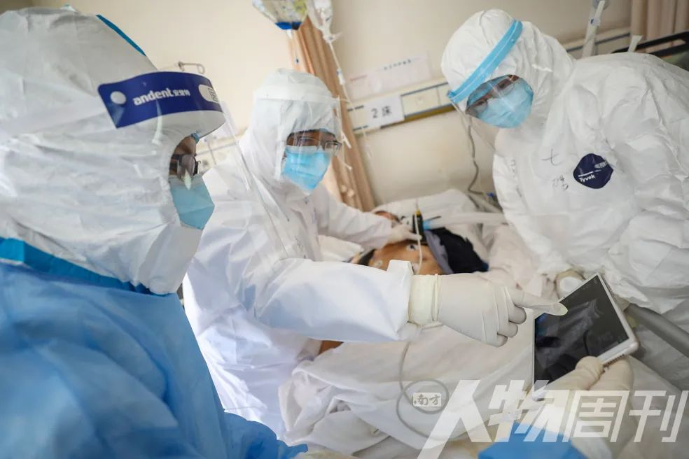
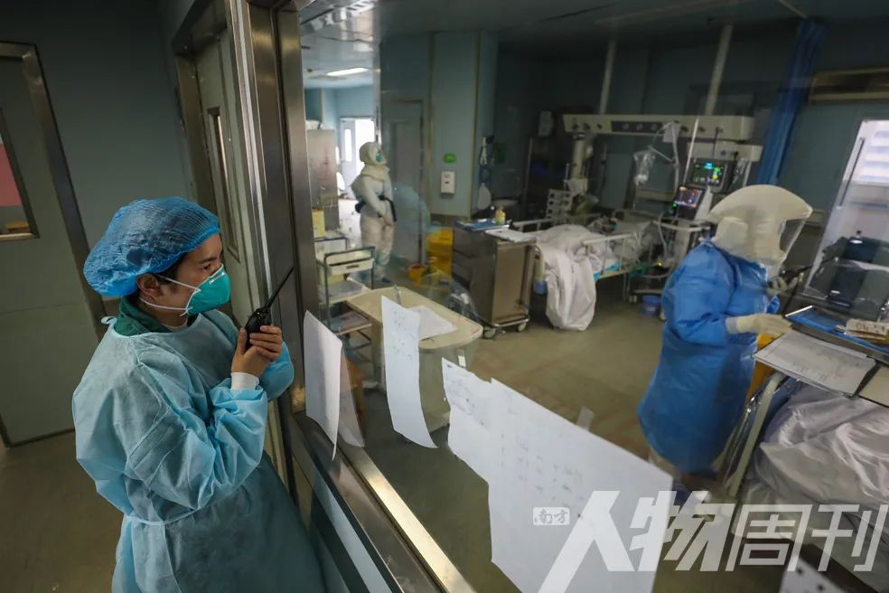
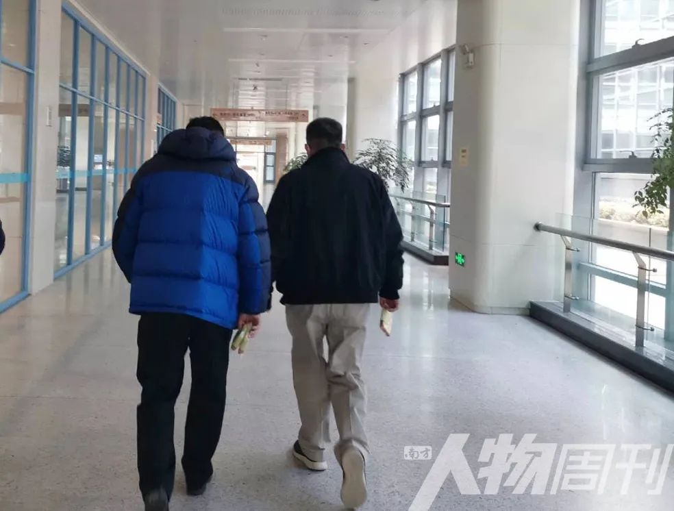
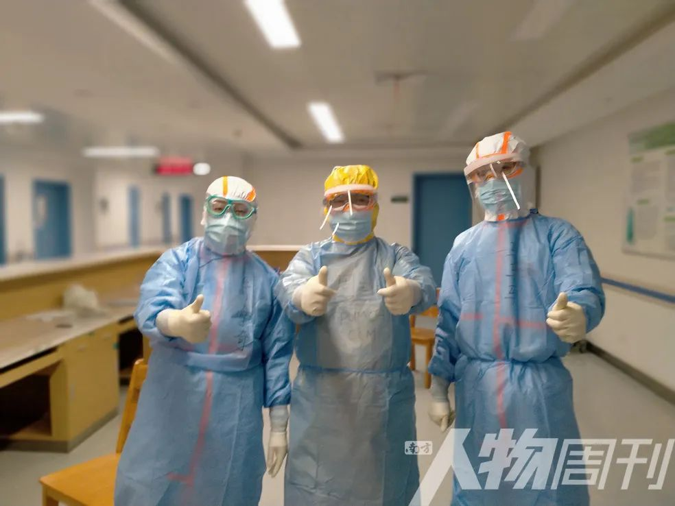
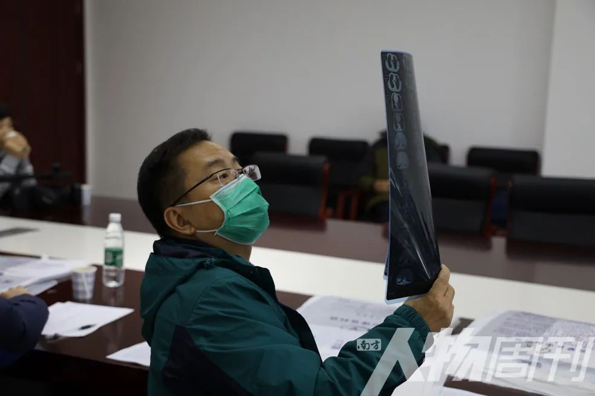
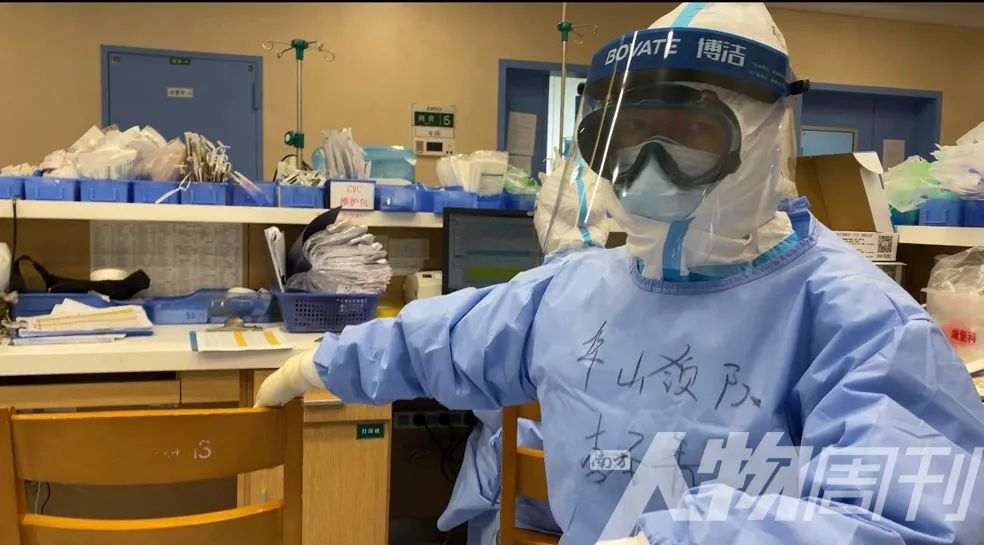
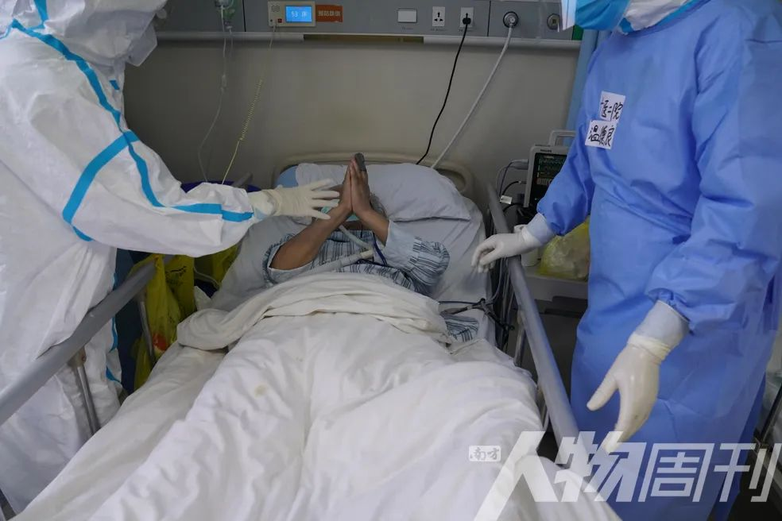
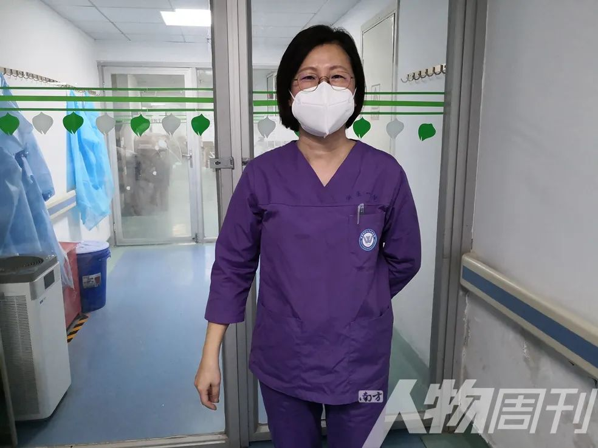
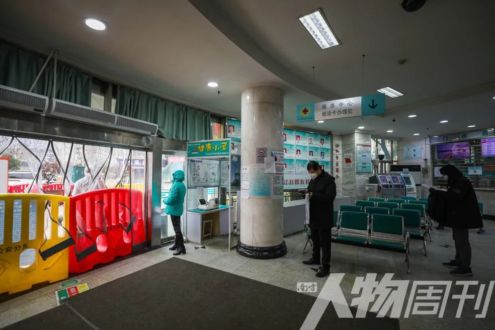
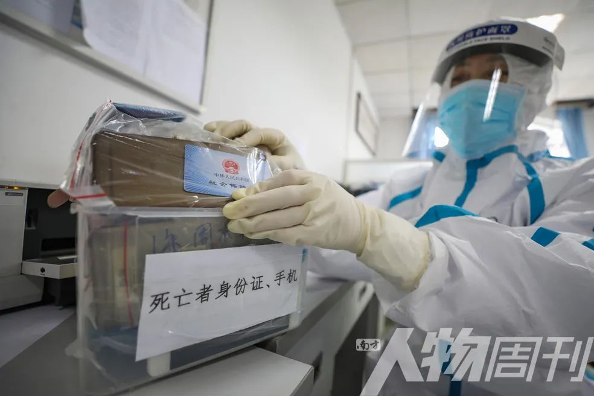

武汉第三医院光谷园区临时ICU关闭，上海重症医生团队24小时床边守护换来高治愈率
原文链接 备份链接 整个2月，是上海第三批医疗队ICU医生团队的攻坚阶段，医生们急于寻找更好的治疗措施，提高治愈率，降低死亡率。 记者 | 黄 祺 昨天（3月16日）是上海市第三批援助湖北医疗队在武汉奋战的第50天，下午1点20分，上海医 …


2月16日，四川省人民医院ICU主任黄晓波（中）在武汉红十字会医院7楼临时ICU病房里查看一位新冠肺炎危重症患者的病情 图/陈卓
全文共11346字，阅读大约需要24分钟。
本文转载自南方人物周刊
文 | 南方人物周刊记者 杨楠 发自武汉
南方人物周刊实习记者 何沛芸
责任编辑 | 周建平
在武汉，许多人曾以为救治新冠肺炎危重症患者的艰难，是前期医疗资源不足所致。但人们逐渐意识到，难以招架的根本原因在于我们对这一病毒带来的最严重后果知之甚少。
人类进化史中出现了一种新的冠状病毒，而认识它的代价却是一个一个的生命。
ICU（重症加强护理病房）是医学救治中的最后一道关口。它就像照进黑暗洞穴的手电筒光束：让你看见新冠疫情最危险的一角，视野有限，却足以令人坠入黑暗。
这是患者的终极一役，也是医生的终极一役。
“你想救他但救不回来”

郑霞使劲拉防护服的拉链，怎么都拉不上。她听到病区里监护仪哔哔作响，看到监护器红灯频闪。可她进不去，病房是污染区，而她防护服总是穿不好，她救不了人。
门铃声将郑霞拉出这个噩梦。时间到了，她该去金银潭医院上班。
在武汉，许多ICU医护都会做噩梦，梦里是连续不断地心肺复苏、不停按压；是呼吸机怎么都接不上、管子总是掉；是无数患者在叫自己的名字——即使多数危重症患者很难发出声音。一位医生的房间里放着威士忌，是有烟熏味、口感强烈的那款，他经常需要威士忌帮助自己入睡。
睡不好，二十多位接受采访的ICU医护都这么说。
最初怀着“入场后就打败病毒”的心情，郑霞在大年三十（1月24日）这天抵达武汉金银潭医院。她是浙江大学医学院附属第一医院的ICU主任医师，国内优秀的青年ICU医生。
入场金银潭ICU的第一天，郑霞独自走进病房。她首先处理了一个没有推镇定剂的插管患者，血氧饱和度差，人机对抗严重。“用点镇静药，再上升压药。”她对护士说。
护士告诉她，没有深静脉注射，只有外周注射。“那用间羟胺，”郑霞说。还没等到间羟胺，患者血压就掉得不行，郑霞只得换用最基本的大剂量补液去维持患者血压。
“你是值班医生么？”突然有护士问她。
“是的。”
“那边的患者血压掉了，休克了。”护士说。
另一个病房里，患者“酸得一塌糊涂”，体内PH值显示为6.9。
郑霞在两个病房之间来回小跑，这边血压弄稳了，那边纠酸怎么都没效果。
“几乎是崩盘，酸中毒太厉害，那天半夜人就没了。我回过头再看，其实他酸中毒应该很长时间了，但我一个人根本做不了那么多事，根本就是你想救他，但你救不回来。”
她没有帮手。在她到来之前，金银潭ICU只剩下两个本科室医生——另外三个病休。医院调来两个艾滋科的医生支援，两个人迷瞪而诚恳地说：“我们会开医嘱，但不会看（肺炎）病人。”护士更是稀缺，几乎是一个人当四个人用。更遑论金银潭的医护们已经坚持了二十多天，却频频面对救治无力、甚至一天去世五名患者的困境。
“之前我们搞重症的都没听说过金银潭，感觉很神秘。”桑岭在路途中幻想金银潭的模样，那大概是个窗明几净、设备周全的救治中心。
他是广州呼吸疾病研究所的ICU副主任医师，钟南山团队成员，与郑霞同一天赴汉，两人共同接手金银潭南七楼的ICU病区。

桑岭 图/受访者提供
事实上，金银潭的病房狭小昏暗，在疫情前期缺乏标准ICU应有的设备——连氧气都不够。这是一所远离武汉市区的传染病医院，有能力快速启动处置传染病的防护机制，但自身不足以面对接连涌入的危重症患者。
武汉的新冠肺炎危重症不断往金银潭转。ICU医生是抢救患者生命的最后一道关口。
但如果抢救的机会都不给他们呢？
多数患者送到金银潭时已是病程末期，甚至成了“半个死人”才往金银潭送。不仅在金银潭ICU，我们在武汉多个ICU病区都听到这样的过往：患者被按着心肺复苏过来；患者送来时已瞳孔散大；患者推进来时就是凉的……医生所能做的只有按照标准抢救半小时，然后开出一张死亡证明。
“患者送来已经不行了，这不是你的错。”有人试图宽慰桑岭。
“你觉得是谁的过错造成的冲击么？你面前死了好几个人，任何一个人看着都不太舒服。我见多了，承受力会好一些，但依然很不舒服。”桑岭说。
患者变成了数字。夜班医生在交班时告诉桑岭，昨晚又死去一个患者。桑岭没有见过他。

2月13日，武汉金银潭医院，医护人员正在ICU内忙碌
图/陈卓
专家组坐在金银潭ICU里，决定申请更多援军对抗死神
郑霞和桑岭由卫健委医疗救治专家组点名指派到武汉。他们抵达前一周，专家组的三名成员杜斌、童朝晖和邱海波已在武汉焦头烂额了五天。
他们每天进金银潭的三个重症病区查房——其中两个是由普通病房临时改造而成。哪怕是国内最好的ICU医生，比如北京协和医院内科ICU主任杜斌，也会在武汉感到崩溃。
“最开始那几天，我去看了一个病人，病人血气检测二氧化碳一栏写的是XXX，这是到了测不出来的程度，没有数字了。二氧化碳潴留通常能通过调整呼吸机解决，我在床边调了一上午，等中午出病房时，二氧化碳显示大于115了。”
终于有数了，但115大大超过检测上限。
“我就觉得非常崩溃，你根本不知道你在干的是什么，你干的效果到底是什么？”杜斌说。
在1月的武汉，你除了感到“崩溃”，还感到“无力”，哪怕你是中央指导组专家组成员——一个医生能在此次疫情中扮演的一种最重要的角色。
“刚开始有太多遗憾，太多了。”专家组成员、东南大学附属中大医院副院长邱海波说，“你真的会觉得很无力很无助。”

重症医生晁亚丽拍下了这一幕，邱海波（右）和杜斌（左）顾不上吃午饭，手拿着面包片，匆匆赶往下一家医院巡视
图/受访者提供
除了金银潭病区，专家组也要巡查武汉其他医院。病房全满了，而病房外是每天几百甚至上千的门诊患者。他们或滞留在门诊大厅，或被迫回家。
“我们不知道有多少病人等着进ICU，不知道这些危重病人在病房外是不是就‘走掉了’。”邱海波说。他接到同学的电话，为垂危的父亲求一张金银潭的床位，却无计可施。
“很多病人你帮不了他。没有床位我们收不进来，有了床位也没有设备，有了设备也没有足够的经过培训的医务人员，这在早期都是非常大的困扰。我只能说我自己去看一个个病人的时候，我能努力的，我都坚决去做。”
在解决科学难题前，首先要解决医务人员和床位紧缺的问题。
2020年1月22日，在金银潭查房结束当天，专家组坐在金银潭ICU里决定，要向国家卫健委申请再派一些专家进驻金银潭。至少一个病房增加两个专家分管病区，手下再有三到四个医生做临床救治。郑霞和桑岭就是那晚被点名的两位。“我们调的都是国内比较顶尖的青年医生，他们往往理念很强，同时很熟练临床操作。”邱海波说。
而在前一日，专家组成员、朝阳医院副院长童朝晖向上级提出自己的第一个建议：开放核酸检测点，尽可能多地确诊和收治患者。
1月22日到2月5日，武汉市新冠病毒核酸检测点从省疾控一家扩展到27家，定点收治医院从12所增加到28所，床位数扩大两倍，达8574张。而在1月31日和2月9日，武汉医疗实力最强的同济医院中法院区和光谷院区所有床位都转为接受新冠肺炎重症患者，最紧张的时期，两个院区一共收治了2025名患者。
50天里，全国调集四万多医护人员支援湖北，与死神抢夺生命，其中一万九千名负责重症治疗。
一位护士搬氧气罐途中晕倒，只休息了一天
2月初采访时，重症医生告诉我们情况有所好转，每天三个病区的死亡患者总数相当于过去一个病区的。一个月后我们才得知，受访者接手的第一批患者，最终都没救过来。
不少援鄂的重症专家都经历过2008年的汶川地震，普遍形容新冠疫情的抢救对他们来说更为残酷。“其实地震时，我们能做的不多，抢救的压力主要在搜救人员那里。另外，地震后送来的伤者数量是不断减少的，但这次疫情危重症患者是越来越多。”一位重症医生说。
病房开出来了，全国各地的医护人员也陆续抵达。
可直到2月初期，武汉各个医院连氧气都不够。
包括邱海波在内，几乎所有身处金银潭的重症医护都在1月搬过氧气罐。仅四个重症病区就有百余名患者需要高压氧，数倍于金银潭供氧站日常的氧耗量。每天午夜零点和早上7点还会突然掉氧，“这会死人的。”一位医生说。
一个氧气罐只能用一小时不到，送氧师傅赶不过来，护士们就自己去搬比人还高的氧气罐。1月下旬，郑霞病区的一位护士在晚上搬氧气罐途中晕倒，护士长坚持让她休息三天。她只休息了一天，因为人手不够。
在同济医院中法院区，北京协和医院最先接管了ICU病区。2月4日接管第一晚，病区里收了18个患者，甚至一分钟内送来过3个。
“对北协和本院ICU来说，我们一天都收不到18个病人。平时工作中，一天偶尔会有一两个濒危，不像这18个，都是随时可能死去。”北协和ICU副主任周翔说。
“你们病房有30个床位，为什么第一天只收了18个病人？”
“因为我们只有18个呼吸机。”周翔说。
到了第二天，周翔收了32个患者，其中28个都实施了气管插管。这是常规呼吸治疗中最强效、但护理难度最高的措施。医生将一特制的气管置入患者的气管中，通过通气装置将氧气直送患者气道深处。
“医生非常痛苦。所有病人我们都拼尽全力，各种能上的手段我们都上了，但最后还是没能够出去（转出ICU）。”周翔说。

周翔（中）和同事合影 图/受访者提供
在北协和病区，第一批重症患者在病房里停留的中位数是5天，最短的是0分钟。
到了2月中上旬，在各方力量的努力下，武汉或是新建供氧站、扩容供氧管，或是调配呼吸机等等，各医院的供氧问题逐渐解决。
沉默的假象
邱海波怀疑机器坏了。
监测仪显示患者的血氧饱和度只有20——人的血氧饱和度及格线至少为90，低于70就可能昏迷。
患者没有昏迷，她安静地戴着无创呼吸面罩，吸氧浓度不高、呼吸不急促、心率也不快。除了不断报警的监测仪，一切看上去都很正常。
30年来，邱海波从未见过这么低的血氧饱和度。
他摘下患者的血氧仪，戴在自己手上，监测仪显示血氧饱和度为98，机器没有坏。他去摸患者的手指，没有指甲油，指尖温度不低，被监测对象没有问题。
他开始调整呼吸机，又配合俯卧位通气，将患者的血氧饱和度调至90。其间，患者只告诉他一种感受：有些憋气。
邱海波将这种患者表现不明显、但体内已经严重缺氧的临床现象称为“沉默型低氧血症”。目前，仍没有一种确定的病理分析能够解释沉默型低氧血症的启动机制。多位医生推测，或许是新冠病毒攻击了人体内的代偿机制。人在低氧时会产生神经冲动，受体感知到后启动代偿机制——表现为心跳加速或者呼吸急促——试图为身体获取更多氧气。一旦代偿被破坏，医生将很难作出及时的治疗决定。
严重低氧却呼吸平稳的假象迷惑了医生。在救治早期，我们听到了太多这样的病例：患者能说话能走路，其实肺部已经全部病变；患者上午还在与医生说话，下午人就没了；医生查房结束，认为一切都好，脱下防护服的时候，身后一台心电监护仪“直了”。
“往往我们看到病人低氧，再有呼吸困难，我们就插管了。但现在病人的低氧表现很隐秘，而且好像吸了高氧之后能纠正，提醒我们要去插管的常见指征都不明显了，治疗就会往后延。”邱海波说。
等到患者呼吸急促需要插管时，往往已是病程末端，而他们在插管之前，已经无法承受片刻的缺氧。在不同医院的疑难病例讨论会上，出现过不下五起患者摘下无创呼吸去洗手间后死亡的病例，还有一起患者摘下氧气面罩吃饭后突然死亡。
在2月5日印发的《新型冠状病毒感染的肺炎诊疗方案(试行第五版)》中，重症、危重症治疗措施中的“呼吸支持”，由原来笼统的一段话，变更为清晰的四条，其中第二条“高流量鼻导管氧疗或无创机械通气”的指导意见指出，若短时间（1-2小时）内病情无改善甚至恶化，应当及时进行气管插管和有创机械通气，第三条则为“有创机械通气”，即气管插管。
事实上，身为国内首屈一指的呼吸危重症专家，童朝晖到达武汉的第三天，就在自己的笔记本上标记了“插管”和“调呼吸危重症医护”。1月下旬，他与邱海波、杜斌达成共识：需要采取更为积极的治疗方式，尽早插管。而这一共识，被三位专家写入了第五版诊疗方案中。

童朝晖 图/受访者提供
提高插管率
这是在战时，指令的下达与平日不同。2月中旬，武汉多家医院都接到指示，要提高插管率。
“这算不算干扰医疗秩序？”
“那时候说提高插管率，不是说要求你必须达到一个比例，也不是说每个病区都要插管，而是发现有些病区里的医护人员认识不到延迟插管的危害，以及无创通气会造成飞沫传播的危害，都说不能插管，这不对。”杜斌说。
2月中旬，插不插管是抢救新冠肺炎的最大医学分歧。综合多位呼吸科和重症科专家意见后，我们发现，主治慢性呼吸疾病的呼吸科医生普遍支持他们更为熟悉的无创通气；而重症医生和主治急性呼吸窘迫的呼吸科医生，往往下手更为果决，支持插管（有创通气）。同时，患者插管后，护理和体外生命支持的难度更大。相比呼吸科医生，重症医生更熟悉体外生命支持。
在医学观点的分歧之外，不插管的原因有很多，比如没有呼吸机，比如医护人员不熟悉这项技术等。
气管插管确属高危操作，患者会喷溅分泌物、血液，或产生飞沫、气溶胶，增加新冠病毒传染的风险。但另一方面，患者插管后，呼吸机形成闭路循环，相比无创呼吸机和高流量吸氧，不会出现痰液的飞沫。
不能逼人当英雄。这是烈性传染病，如果不是经历过SARS的老兵，初次面对它时，恐惧难以避免。
上海华山医院接手同济医院光谷院区ICU的第一天，领队李圣青急得在走廊里喊：“你们赶快给我过来一个人。”她拽来一个护士，给患者推镇静和肌松，以完成插管。

李圣青 图/范士广
李圣青有29年的军旅生涯，说话爽利。回到驻地，她告诉所有医护人员，“我们队内有全国最好的院感专家，科学防护足够到位。”紧接着，她直白地说：“这种情况下，你让自己沉浸在恐惧里，就是一种自我放纵，和沉浸在各种享乐里一样的放纵。但我们是来治病救人的。”
那段时间，童朝晖一个接一个去医院讲课，花一个小时的时间告诉医护人员，在当前的防护条件下，插管并没有太大风险，插管要比不插管好维护。
在采访中，我们得知，2月中下旬，至少有五位国家卫健委直接调派的专家，去往不同病区带头插管。
“医生哪能看着病人情况越来越差，有治疗措施却不使用呢？你不插，我给你插，我给你做出榜样来。恐惧的心理大家都知道，这很正常。但是如果一直拿恐惧来说事，就不对。”杜斌说。
关于插管和不插管的争议在3月上旬基本结束。李圣青形容这是“血的教训”，她曾经看着患者无创吸氧的效果不错，血氧饱和指数稳定在92-93，犹豫再三决定不去插管。“我还挺开心的，高兴地脱了防护服，还没走到医生办公室，他们就告诉我15床和4床没了，这简直让我太吃惊了。”
她下定决心要关口前移，提早插管，“再前移都没有错，要么人命就没了。”

2月16日，武汉红十字会医院7楼临时ICU病房里，四川省人民医院的邓磊医生对一位新冠肺炎危重症患者进行气管插管手术 图/陈卓
“受攻击的不仅是肺，只是肺最先受攻击”
2月3日，《南方人物周刊》刊发了对复旦大学附属中山医院重症医学科副主任钟鸣的专访《多数重症病人体内突然启动炎症风暴》，他也是国家卫健委最早点名驰援金银潭的专家之一。在那篇报道中，钟鸣最早向大众描述新冠肺炎后期病程突然加速、多器官受到攻击，引发广泛关注。
一个月后，钟鸣告诉我们，他重新审视了炎症风暴这一对临床表现的描述。“其实我当时说的是我的一种推断，我当时发现白细胞介素-6有些升高，这是炎症反应中一个重要的临床表现。但后来病人越来越多，我发现白细胞介素-6是升高，但没有高那么多。”
简单地说，患者体内炎症因子失衡，但没有到启动风暴的程度。
钟鸣的推断是人类认识新冠肺炎过程中浅浅的一步。北京大学人民医院重症医学科主任安友仲说：“我觉得他提出这个问题，大家就会去关注化验单上的细胞因子。能引起讨论，这是好事。即使关注之后发现不是那么回事，也是重新认识了新冠病毒。”
患者可能很难察觉新冠病毒的入侵。他的身体如常，平稳地行进。
突然，他被迫跑起了马拉松，一程结束又是一程，程程相扣，无法停歇。氧气就环绕着他，他大口喘息，一口一口地抽，却怎么都不够。空气经过了他的喉管，却永远无法穿过它的肺部。他的肺发生了实变，肺泡结构被破坏，实得像一块猪肝。然后是肺部纤维化，像是一个风干已久的气球，失去了弹性，变得硬且脆。任何外力都可能使其发生范性形变——撑开，然后破裂。
他的免疫系统已经奄奄一息，心脏和肾脏也遭受了攻击，可他毫无察觉。突然他发现脚下不是终点，而是悬崖边缘。他坠入海面，下沉，拼命挣扎，可他再也呼吸不到一口气。
最终，他的死因上写着：新型冠状病毒引起的肺炎。
新冠病毒不仅攻击肺，还会攻击免疫系统、心肌和肾脏；还能导致患者体内二氧化碳潴留，引发酸中毒；也可能破坏患者体内的代偿机制。这是过去两个月里，临床医生对新冠病毒认识的推进。
在不同医院的疑难病例讨论会上，出现过十多例患者突然心跳骤停的病例。这既可能是因为一时缺氧导致，也可能是新冠病毒攻击患者心肌的结果。医生们观察到一些心肌受损的标志物参数升高，但患者并没有典型的心衰表现。
通俗地说，患者心肌受损，但心脏功能没有出现障碍。心脏的每个细胞都受伤了，但它们还在勉强咬牙工作，而到了某个临界点，所有的细胞都突然罢工。
北京协和医院感染内科主任李太生指出，“新冠肺炎”的称呼或许低估了病毒带来的最严重后果，应该称为“新冠病毒感染”。“受到攻击的不仅仅是肺，只是肺最先受到攻击。”李太生说。

武汉协和医院，一位转到普通病房的患者双手合十向医生表达感激 图/南方周末记者 翁洹
“太难了，我们也是在猜”
“面对一种新疾病，每个医生积累的所谓经验，都是一个个去世的病人教会我们的。”宣武医院ICU主任姜利说。她也是国家卫健委最早点名驰援金银潭的专家，与钟鸣同一病区。
如前文所述，在ICU里，死亡会突然发生，这不是ICU医生允许的事。他们的职责就是与死神抢人，曾经屡屡成功。他们希望自己明确地知道每个患者在每个病情阶段应该怎么处理，然后拽住患者。
“轻症多，重症重。”多数患者可以在方舱跳舞，部分人需要高流量氧气支持，不到4%的患者会转为危重症。在武汉50004例确诊（截至2020年3月16日24时）的基础上，4%意味着2000例转为危重症。如果不是见过危重病人，医生们往往无法体会新冠病毒的可怕。
周翔真正产生恐惧是看到遗体解剖结果后。遗体解剖对认识病毒的病理特征、探索病因治疗至关重要，但由于传染病高危风险、与患者家属沟通不利等等因素，新冠患者的第一例解剖直到2月16日才完成，2月28日发布报告。周翔从最近的一起解剖会诊中得知，患者“肺泡上皮的II型肺泡上皮细胞呈肿瘤样增长”，这意味着患者的肺泡结构被破坏，而这个结构是气体在肺部正常交换赖以生存的基础。
“对于这种呈肿瘤样增长的II型细胞，说实话我们现在没有办法。”周翔说。
遗憾的是，遗体解剖所呈现的是终末状态，这个疾病在发展过程中的演变，我们仍缺少病理学的解释。也就是说，临床医生现在只是了解了新冠肺炎的发生、发展，还没能够学会迅速阻断某个环节的进展。几次不同的疑难病例讨论结束后，我们都在电梯里听到一些知名医学专家叹息：“太难了，我们也是在猜。”
世界卫生组织3月1日发布的疫情报告指出，新冠肺炎重症患者的死亡率超过50%。据武汉市卫健委的疫情工作汇报，武汉几家接受重症患者的大病区，除同济医院光谷院区外，2月的全院死亡率在9.38%-12.36%之间，ICU的死亡率均超过60%。
在采访中，桑岭说了几次“不过瘾”，这是广东话描述心里不舒服的意思。他是个有些意气的医生，他拿去疑难病例讨论会的病例往往只有一个原因：尽了一切努力，已经出现了好转的迹象，为什么突然人就没了呢？
“我真的不知道为什么人就没了。”桑岭反复说，“我只能描述为什么这个病难搞，但是我不知道为什么……”
一位北协和的医生在内部开会时突然哭起来，说觉得自己好没用，救不了人；一位援助金银潭的医生在一晚上经历了四个患者的死亡之后，连着几天不断向周围的人描述那晚的经历。而在2月中旬，钟鸣曾经疲惫地对我们说：“过往的经验都不管用了，我可能做错了。”
医生和护士都在尽力，但人类认识烈性传染病的过程，代价就是一个一个生命。
关口前移
从2月初起，不断有专家呼吁关口前移。姜利最希望做的就是每天去所有普通病区走一圈，把那些看着快要出问题的患者挑出来，有机会能进ICU得到照顾。
“以灾难学里的地震应急处理为例，地震中像我们这样的重症医生是不去第一线的，第一线的人是去筛选伤员，检伤分类，然后分级后送。”姜利说。

姜利 图/受访者提供
在1月18日印发的第二版诊疗方案中，国家卫健委将患者分为疑似、确诊、重症和危重症病人，而2月5日印发的第五版中，则更改为轻型、普通、重型和危重型。
“重型和危重型是一个应急管理的分层分级。他们对医疗资源的需求更高。”邱海波解释说。其中的危重型患者，就是常规临床上的重症病人。
到了2月中旬，国家卫健委明确要求各个医院关口前移，这成为此次疫情重症救治至关重要的判断。“我们要求临床医生要做到关口前移，一定要把握住能够抢救患者生命的有利时机，及早使用有创呼吸机，恢复患者的血氧饱和度，把死亡率降下来。”国家卫健委医政医管局副局长焦雅辉2月15日表示。
“重症治疗的手段要提前介入，同时也要把轻的看好。你轻症转院也要打出提前量转，太重了转到那里就不行了，国家卫健委后来要求我们专门弄了一个转诊原则和转诊流程。”童朝晖说。
“前期武汉市指挥部统计过，转院转到医院就死的有130还是140人，说明一个是病情重，第二个转晚了。”一位卫健委的相关人士告诉我们。
但关口前移不仅仅是及早插管，而且是全方位的关口前移。在疑难病例讨论会上，多位医生指出，新冠肺炎是一种急性疾病，不能等到指标掉下来才反应，必须提前干预。
调集武汉的一万九千ICU医护不仅仅在ICU工作——武汉真正意义上的ICU病床大约有400张。更多的ICU医护，比如上海中山医院、北京大学附属人民医院的重症团队，都进入了普通病房改造的重症病房中。ICU医护往往对患者的病情变化更为敏感，“把ICU医生推进去，就是细心地观察病人。不但充分发挥ICU医生对各种生命支持技术的经验和能力，而且能把病人评估好、判断好然后再去做。”复旦大学附属中山医院重症科副主任罗哲说。
从2月22日起，新冠肺炎患者重症病例呈现了第一次持续的减幅，三天减少了1908例。

3月6日，武汉红十字会医院，排队出院的新冠肺炎治愈患者 图/陈卓
打地鼠
就像是玩打地鼠，冒出一个打一个。重症救治所能做的只有对症治疗，哪里不行救哪里。
有痰了就化痰拍痰吸痰，合并感染了用抗生素，血压高了降压，氧合不好可以去调整呼吸机或者俯卧位通气。
俯卧位通气是一种改善急性呼吸窘迫患者氧合的手段，它以往是对部分患者有效，这次几乎是对所有患者有效。这是1月下旬邱海波他们三位专家组成员在金银潭查房摸索出的规律。在金银潭供氧条件无法改善、调整呼吸机的效果也不明显的情况下，他们尝试了连续俯卧位通气，发现这能改善多数患者的氧合。“连续进行12小时俯卧位通气”后来被写入第五版的诊疗方案中。
3月13日，世界卫生组织发布了更新后的“疑似2019新型冠状病毒（COVID-19）导致严重急性呼吸道感染的临床管理临时指南”，在对危重型患者的治疗意见中，前三条均为有创通气相关，第四条是建议每天俯卧位通气12-16小时。
重症患者不仅是从新冠病毒那儿抢回来的，也是ICU医护们守出来的。他们监控着患者的每一点变化，一旦走到悬崖边缘，医生就尽可能托住患者，也许有些人就托住了。
新冠肺炎会引起急性呼吸窘迫，而急性呼吸窘迫的一个基本治疗原则是限制液体。但另一方面，不少患者会因为合并感染而引发休克，休克则需要补液复苏。ICU医生常常会碰到这种两难境地。“两害相权取其轻。”钟鸣说。
在一个设备足够的ICU里，病人会被上满监测仪器。ICU的医护守在患者身边——姜利甚至会搬来小板凳坐着，根据指征和患者的临床表现随时调整治疗方案。
但金银潭的ICU最初只能做心电监护、血氧饱和度监测和无创血压监测。在过去50天里，金银潭逐渐增加了有创压力监测、中心静脉压测定，还有呼气末二氧化碳模块——这是钟鸣通过关系要来监测模块，用以提早处理患者体内的二氧化碳潴留问题。
监测的是地鼠，一旦冒出头，医生们就想法儿打下去，能够托住生命的手段几乎都用上了。在同济医院的ICU病房里，一个患者床边放了四台机器：ECMO(体外膜肺氧合)、CRRT(连续肾脏替代疗法)、呼吸机，还有输液泵。他被插满管子，其中一根通向CRRT上一个与矿泉水瓶差不多大的粗管中。患者体内的血液走过一段蜿蜒的道路，被过滤掉炎症介质，再重回体内。
这都是医学救治中的重武器，用当前医学最猛的手段去拉住一个人的生命。
但这都只能维持住病人的生命，康复的决定性因素在于病人的自愈能力。因而ECMO的使用也带有争议：一旦病人的心肺发生了不可逆的损害，无法自愈，即使能维持住生命，依然无解。
“这个病最痛苦的地方是迄今为止没有病因治疗，都是在支持治疗。”周翔说。

武汉儿童医院，护士蔡慧在安抚一个哭泣的感染了新型冠状病毒肺炎的婴儿 图/南方周末记者 翁洹
ICU——“I Care U”
如果非说来武汉有什么私心，那黄晓波的私心就是来做个纯粹的医生。
他是四川省人民医院的ICU主任，带着四川省第一批援鄂医疗队在1月25日到达武汉，接管红十字会医院——最早来的几支医疗队都被分去疫情最为惨烈的医院。《南方人物周刊》在早前报道里提到，四川医疗队用了十天时间重建了被新冠病毒摧毁的医院，而这之后，黄晓波的主要任务，就是救治重症患者。
“我们做医生的，能只做医生是一种理想状态，只需要想我们的病人。”黄晓波说。在武汉，医生们不需要面对人情纠葛：这个人是我的上级，我要怎么谈，这个人是我的下级，我要怎么说。在国家财政的支持下，医生们不需要担忧病人因为费用不足而无法得到最好的治疗，也不需要为医患关系而战战兢兢。
黄晓波把ICU解释成“I Care U”：我谨慎地照顾你。这是罕见的时刻，患者全身心依赖医护人员。患者会对护士说，护士我特别饿，我想吃东西，护士给他剥水果。也有患者主动帮忙，因为眼见防护服下的护士憋得脸通红。一位金银潭的护士说，她已经很长时间没有感觉到自己职业的价值，但现在，她还是很热爱自己的职业。
郑霞唯一一次掉眼泪，是她给一个患者插管的时候。她说，等你好了我就给你拔掉，你就能回家了。
“医生你叫什么？”患者问，“我要记住你，谢谢你。”
郑霞突然就开始流眼泪，护目镜都糊了。“我不知道我这插管插下去，他还能活多久，可他还要谢谢我。”郑霞说。
气管插管会增加患者的痛苦，增加合并感染的风险，所以医生往往需要费力气去说服家属同意插管。但这次不一样，患者和家属都更容易理解医生的治疗决定。在郑霞的病区，一位奶奶在同意插管后，在纸上写下了遗书：挺不过去了，房子该怎么分，钱该怎么分。
奶奶没挺过去，家属同意捐献遗体，用于病理解剖。
即使有的患者难有好转的可能，医生也希望托住他们。托住一个人的理由有很多种，比如希望他干净舒服一些，有尊严地离开。
姜利托了最久的患者是六十多岁的吴奶奶（化名）。她给吴奶奶做了插管，两周后，长时间插管导致口腔中积存污物。姜利选择为她做气管切管，“让她走之前多少能干净些。”
在新冠肺炎疫情中，逝去的患者身处隔离病房，没有家属。他身边可能有医护人员，可他看不清医护的脸。他们都包裹得严严实实，只从护目镜后露出一双眼。整个2月里，医护们常常遇到的情况是，给逝者家属打电话，家属却无法前来——他们也被隔离收治了。
“僵持”，这是进入3月以来，ICU医生最常使用的词。钟鸣僵持最久的一个患者插管时间超过一个月，他舍不得放弃。一位在郑霞手上僵持的患者已经醒来，她渡过了最为惊险的镇静“戒断关”，与呼吸机配合，努力吸气。在推她去做CT的路上，她给护士们写下两行字：请你走慢一点，我想看看沿途的风景。
“她是个坚韧的人，有顽强的求生意志。”郑霞说。

2月25日，武汉红十字会医院7楼临时ICU病房办公室，红会医院护士长杨莉正在整理去世的新冠肺炎患者的遗物。杨莉表示“等到疫情结束了会尽力将这些遗物交还给他们的亲人，那些手机里一定还留存着他们一家人最珍贵的记忆” 图/陈卓
断后
“对中国最好医院的ICU医生来说，这次疫情意味着什么？”我们问周翔。
“没有医生愿意失败。可能我以后都跟这个病较上劲儿了，我们还是期望能有一个解决的办法。”他回答。
驰援武汉的心理专家、上海市精神卫生中心副院长王振告诉我们，已经有一些医护人员出现了创伤后遗症。有的医生是无意识回避1月的经历，一旦别人问起，他仿佛什么都记不起来。有的护士出现了“闪回”，患者去世前抢救的场景，总是会突然出现在眼前。
“她记得很清楚，患者前几分钟还在说话，突然就不行了。然后她感觉自己在看电影，能看到其他人在抢救患者，其实她也参与其中，但对自己的行为没有任何记忆。”
ICU常常成为托底病房。无力救治的病区，会将患者转向医疗能力较强的ICU，以至于在一次内部会议上，副院长刘继红发火道：“不要再往ICU转了！你们就是ICU，就地抢救！”
有时候，被大医院退回的新冠肺炎轻症但有其他重疾的老年患者，被送到区级医院的ICU里。在一家区级医院的ICU里，11个患者均在70岁以上，新冠核酸检测都已转阴，但自身的其他疾病使得维系生命困难重重。
“有大量病人在短时间内离去，我们都直接或者间接目睹了一个家庭的悲剧，其实这个对我们的打击比任何时候都要大。”钟鸣说。
在武汉，救治新冠肺炎患者的战役正逐步进入尾声。2月下旬开始，武汉现有新冠肺炎重症患者人数连续下降，从9628例减到3月16日的2695例。
现在，我们有时能看到樱花树下出现了驻足留影的医护人员，援鄂的外地医务人员也在陆续返乡。3月底，武汉全市46家定点医院全部恢复正常医疗体系，金银潭医院、肺科医院和雷神山将会留到最后，接收新冠肺炎患者。
“我们是要断后的。最早来，最晚走。”在金银潭连续工作了54天的姜利说。


中国人物类媒体的领导者
提供有格调、有智力的人物读本
记录我们的命运 · 为历史留存一份底稿
戳击下面图片 继续阅读专题


原文链接 备份链接 整个2月，是上海第三批医疗队ICU医生团队的攻坚阶段，医生们急于寻找更好的治疗措施，提高治愈率，降低死亡率。 记者 | 黄 祺 昨天（3月16日）是上海市第三批援助湖北医疗队在武汉奋战的第50天，下午1点20分，上海医 …
原文链接 备份链接 *****“恐怕今后很长一段时间，武汉的医院在接诊患者的时候，都要做新冠病毒筛查并兼顾治疗原发病。急诊科的压力，恐怕比疫情初期还要重。”***** 房明浩拍摄的金银潭医院南七楼ICU的工作场景。受访者供图 文 | 新京 …
原文链接 备份链接 *************▲************* 2020年2月22日晚，武汉市金银潭医院，医护夫妇涂盛锦(左)和曹珊“以车为家”。 （新华社/图） 全文共10527字，阅读大约需要22分钟。 这里发生的许多事 …
原文链接 备份链接 *************▲*************湖北省医疗救治组专家在同济医院中法新城院区新冠肺炎重症病区与患者交谈。 （新华社/图） 全文共6264字，阅读大约需要14分钟。 就在徐慧连觉得患者能化险为夷时， …
原文链接 备份链接 继武汉大学中南医院利用 ECMO（叶克膜）成功救治了一名新冠患者之后，上海、甘肃都出现了用 ECMO 挽救危重病患者的案例。 现任台北市长、前台大医院教授柯文哲，作为将 ECMO 技术引入大中华地区的第一人曾 …